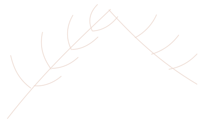
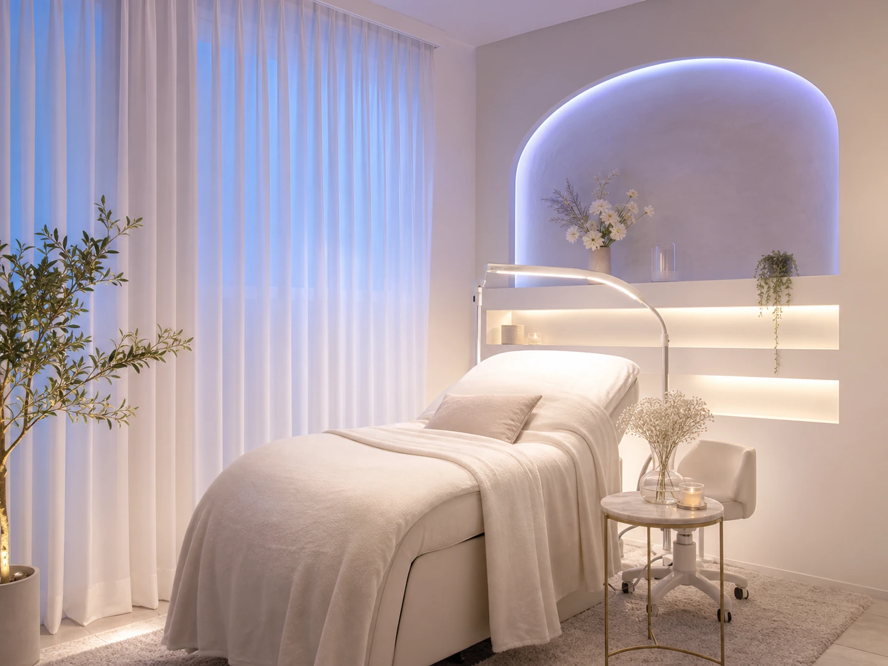
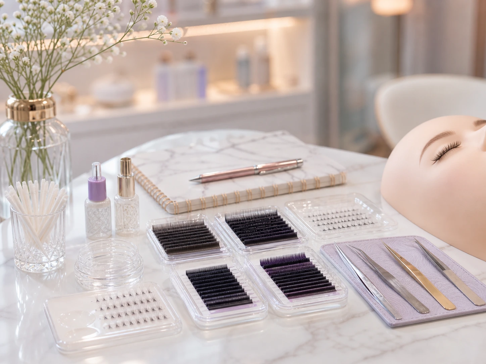
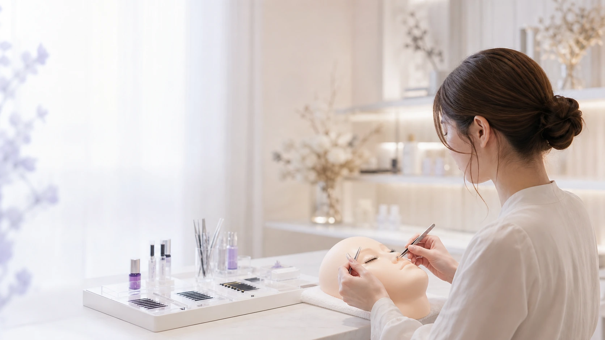

実践力
現場で即戦力となる実践的なカリキュラム。
美しい技術は、未来を変える。確かな技術と想いを大切に、現場で活躍するアイリストを育成するスクールです。


Lucia Eyelash School は、技術の習得だけでなく、想い・接客・カウンセリング・サロン運営までを一貫して学べるトータルサポートスクールです。
現場で求められる「実践力」と、お客様に寄り添う「心」を育て、あなたらしいアイリストとして輝く未来を応援します。
現場で即戦力となる実践的なカリキュラム。
お客様に寄り添うホスピタリティを育みます。
一人ひとりに寄り添う少人数レッスン。
サロンワークを想定した実践的な指導。
目指す未来やレベルに合わせて、必要なすべてを一つのカリキュラムに。実践的な技術とサロンワークの力を、トータルで身につけることができます。

未経験の方 ／ 技術を見直したい方 ／ サロン就職・独立を目指す方
基礎理論・衛生管理 ／ LUCIAで提供している施術メニューに合わせた技術研修 ／ LED施術を中心としたエクステ技術 ／ デザイン提案 ／ カウンセリング ／ 接客・サロンワーク ／ サロン運営の基礎
少人数 ／ 個別フォロー ／ スケジュール相談可
独立相談 ／ 卒業後フォロー ／ 商材相談



LINEでお気軽にご相談ください。
目標やご不安を伺い、最適なプランをご提案。
一人ひとりに合わせたカリキュラムで学習開始。
卒業後も安心のフォロー体制で成長を支援。
カリキュラムやスケジュール、受講料について丁寧にご案内いたします。
技術と接客を身につけたら、今度はサロン経営を仕組み化するフェーズです。Lucia が実際に活用するシステムとサポートをご紹介します。